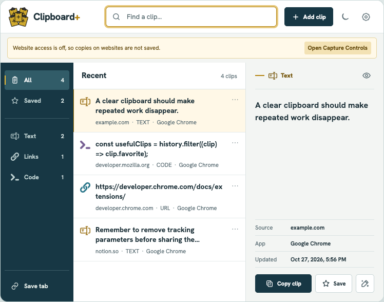
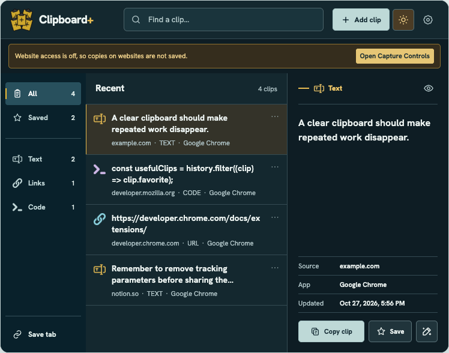
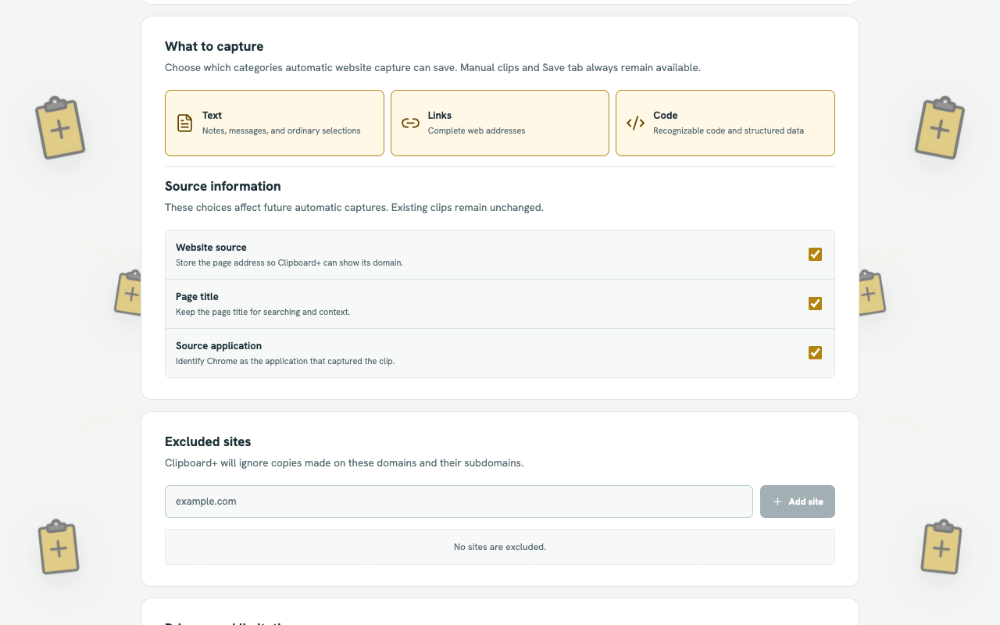

Keep useful clips close.
Find and reuse the text, links, code, and snippets you save in Chrome. Your clipboard history stays on your device.


Catch what matters
Save a clip manually, keep the current tab, or choose to enable automatic capture on websites you authorize.
Find it quickly
Search recent clips by content or source. Favorites live in their own Saved section, away from everyday history.
Reuse in one click
Click a result to copy it. Fill a smart snippet or transform text locally when you need a variation.
Capture, on your terms.
Automatic website capture starts only when you enable it. Choose the types to keep, exclude sites, pause capture, or clear history at any time.
See how local capture works
Your history belongs to you.
Automatic website capture is off until you enable it. The free Chrome extension uses local storage—no account, analytics, advertisements, or remote clipboard processing.